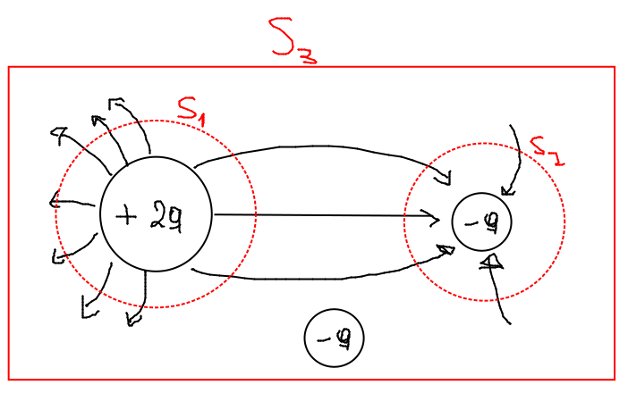
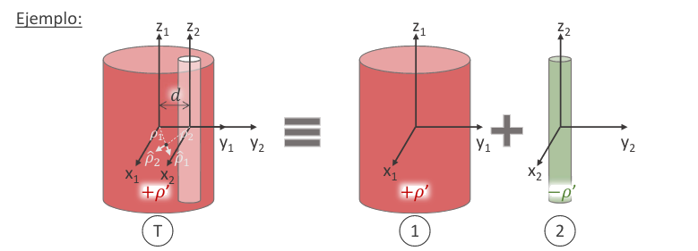

El flujo es proporcional a la cantidad de líneas de campo que atraviesan/pinchan la superficie:

\begin{align} \phi_{S_1} = 10L \\ \phi_{S_2} = -5L \\ \phi_{S_3} = 0L = 0\\ \end{align}Vemos que aunque el flujo de \(S_3\) sea \(0\), no quiere decir que no haya carga dentro, si no que las que salen por un lado entran por otro, por lo que el neto es \(0\).
Nos ayuda a calcular el flujo (magnitud escalar) de un campo vectorial a través de una superficie \(S\).
\begin{align} \phi_{E(S)} = \int_S \vec E \cdot d\vec s \end{align}El flujo es proporcional a la cantidad de líneas de campo que atraviesan/pinchan la superficie, por lo que para cualquier superficie \(S\) que encierre al conjunto de cargas:
\begin{align} \phi_{E(S)} = \int_S \vec E \cdot d\vec s = {q_{encerrada} \over \epsilon_0}\\ \end{align}
- \(\rho\) (densidad de carga volumétrica) está definida como:
Si \(\rho\) es constante: \(q_{enc(S)} = \rho V\)
Para resolver \(\phi_{E(S)}\), puedo plantear el teorema de la divergencia (flujo de una superficie cerrada es igual al la integral triple de la divergencia):
\begin{align} \int_S \vec E \cdot d\vec s = \iiint_{V(S)} \vec \nabla \cdot \vec E dv\\ \end{align}Por lo que puedo plantear:
\begin{align} \phi_{E(S)} = \int_S \vec E \cdot d\vec s = {q_{encerrada} \over \epsilon_0} = {1 \over \epsilon_0} \iiint_{V(S)} \rho dv = \iiint_{V(S)} \vec \nabla \cdot \vec E dv\\ \end{align}Y llego a la conclusión que: \(\vec \nabla \cdot \vec E = \frac{\rho}{\epsilon_0}\)
Puedo utilizar la ley de gauss para encontrar la intensidad del campo. Para ello encierro la superficie/volumen cargado (que produce el campo) con una superficie gaussiana y hallo el campo a través de esta y despejo la intensidad del campo.
obs: obvio que se puede calcular el campo con coulomb, pero es mucho mas complicado matemáticamente
Solo puedo hacer esto siempre y cuando el campo \(E\) sea uniforme (con respecto a las variables de las que depende la superficie gaussiana), para poder sacarlo fuera de la integral.
- Puede ocurrir que tenga una superficie que parezca uniforme (por su geometría), pero que no sea uniforme por su distribución eléctrica.
- Ejemplo: esfera de \(\rho = cos(\phi)\), en un polo de la esfera tengo carga positiva y en el otro negativa, por lo que no puedo utilizar gauss para resolver el problema.
Antes de calcular la intensidad, previamente tengo que calcular la dirección que va a tener este campo (generalmente a ojo, o poniendo carguitas y viendo para donde apuntaría la fuerza)
Queremos elegir una superficie gaussiana tal que el campo sea uniforme y paralelo a la normal de la superficie, o bien perpendicular.
No siempre puedo encontrar el campo desde Gauss. puede pasar que no puedo predecir para donde apunta el campo (porque depende de varias variable, tiene componente en muchos versores, etc)
Si en una configuración de cargas no puedo definir (a priori) la dependencia del campo con las coordenadas espaciales, ni su dirección. Podemos usar el principio de superposición para descomponer el problema en otros que sí tengan dichas simetrías.

ejemplo plano e hilo infinitos superposicion PAG 18 CUADERNO
Al aplicar la ley de Gauss las cargas en cuestión son las que se encuentran dentro de la superficie gaussiana. Esto significa que las que quedan fuera no colaboran en el resultado final.
Recordar que la ley de Gauss es válida siempre, más alla de que el caso sea fácil o dificil.